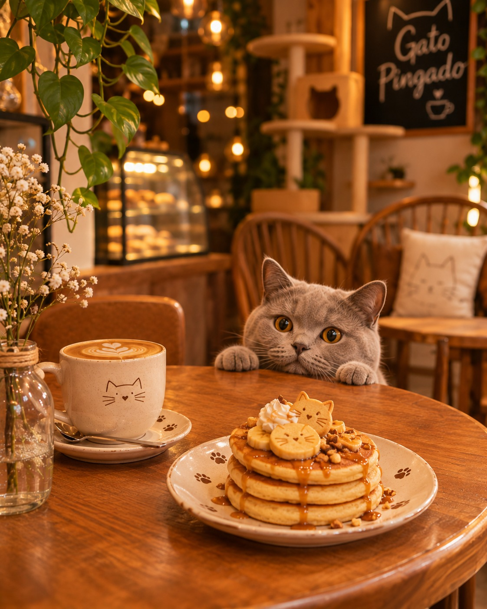
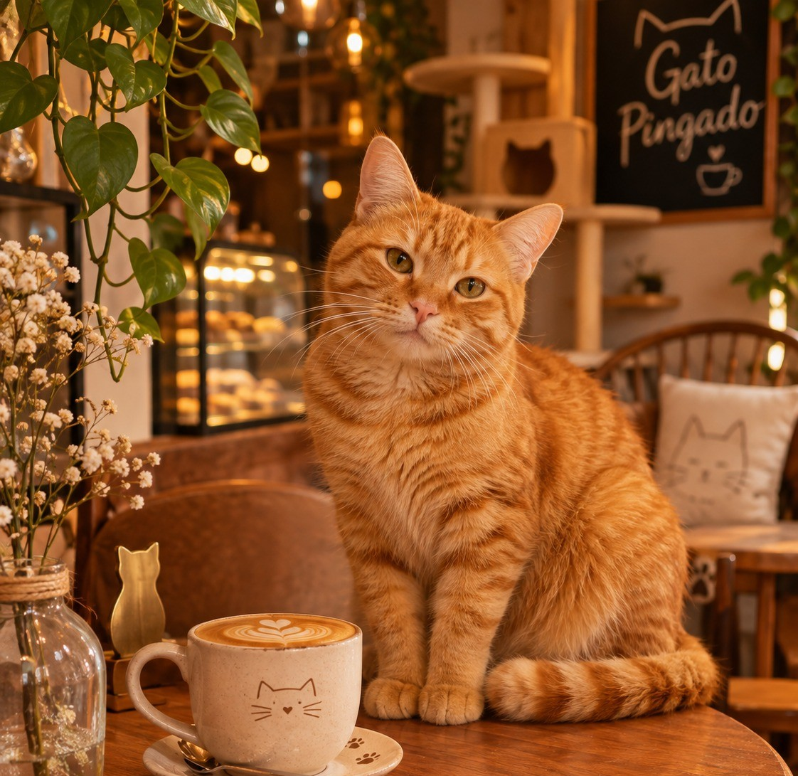
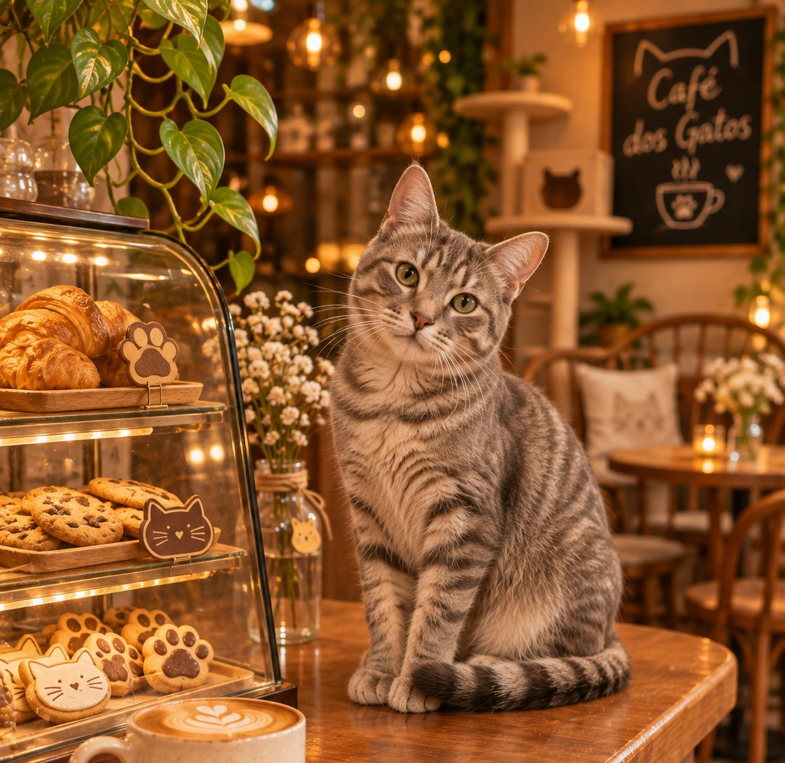
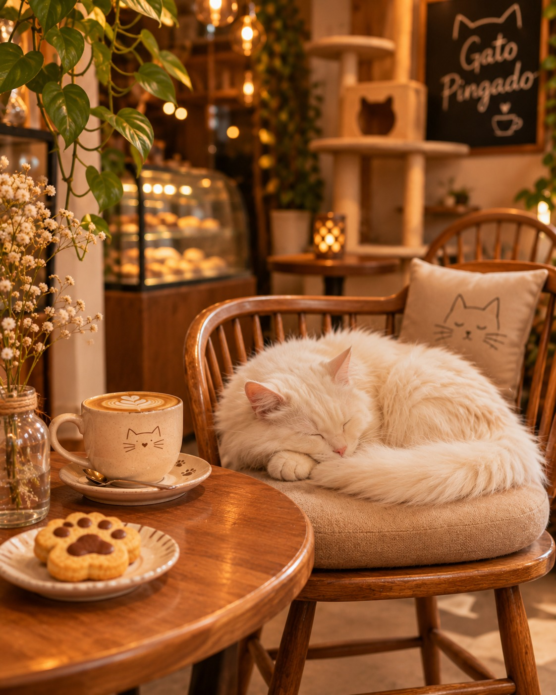

Gatinhos para adoção

Nuvem
O especialista em conquistar corações!
Disponível para adoção
Simba
Um raio de sol esperando por um lar!
Disponível para adoção
Mingau
Pequeno no tamanho, gigante na fofura!
Disponível para adoção
Café
Uma companhia especial para qualquer momento!
Disponível para adoção
Floquinho
Um abraço em forma de gatinho!
Disponível para adoçãoComo funciona a adoção?
Adotar é um compromisso de amor e responsabilidade. Queremos garantir que nossos gatinhos encontrem famílias preparadas para cuidar deles.
1. Escolha seu amigo
Conheça nossos gatinhos e descubra qual combina com você.
2. Preencha o formulário
Conte um pouquinho sobre você, sua rotina e seu lar.
3. Converse conosco
Nossa equipe entrará em contato para orientar sobre o processo de adoção.
4. Prepare seu lar!
Com tudo organizado, começa uma nova história cheia de carinho.
Nossos gatinhos precisam de alimentação, higiene, cuidados e diversão. Sua contribuição faz a diferença no dia a dia dos nossos moradores.
Ração e sachês
Alimentos para manter nossos gatinhos bem alimentados e saudáveis.
Brinquedos
Bolinhas, arranhadores e brinquedos para diversão dos nossos pequenos.
Produtos de higiene
Areia sanitária e produtos adequados para manter o ambiente limpo.
Cuidados veterinários
Ajude com despesas de consultas, vacinas e tratamentos veterinários.
Seu novo melhor amigo está esperando por você!
Gostou de algum dos nossos gatinhos? Preencha o formulário e dê o primeiro passo.
Quer ajudar?
Para saber mais sobre adoção ou doações, entre em contato com nossa equipe
Entre em contato